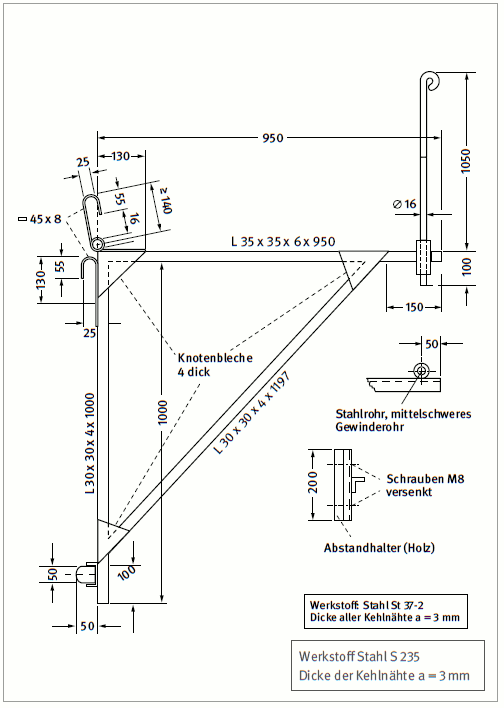
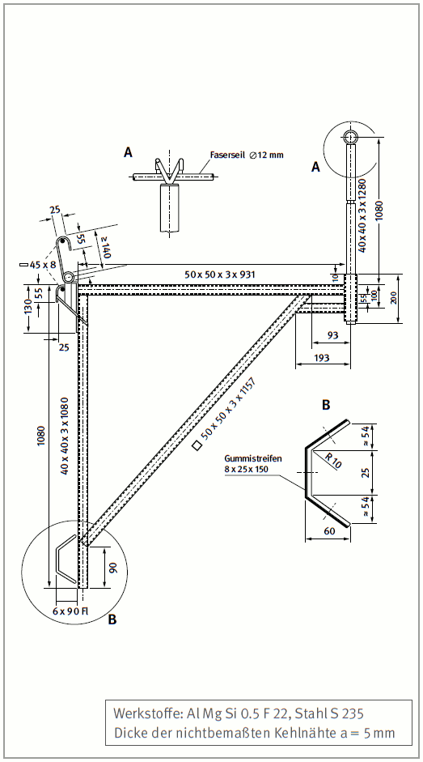
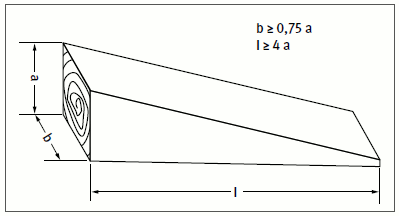
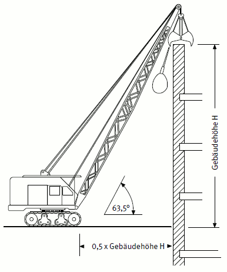
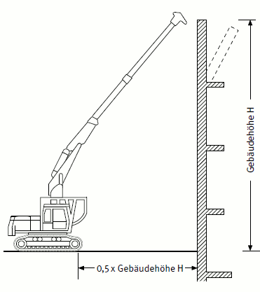
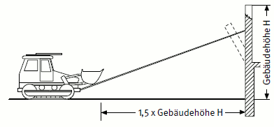
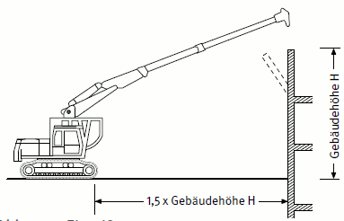

Schornsteine, die abgebrochen werden sollen und nicht über geeignete Steigschutzeinrichtungen verfügen, dürfen abweichend von Abschnitt 4.6.1.1 mit Aufsatzleitern und Absturzsicherungen bestiegen werden.
Gegen Abstürzen kann z. B. ein mitlaufendes Auffanggerät einschließlich beweglicher Führung verwendet werden.
Soll die Mündung überstiegen werden, muss eine geeignete Einrichtung geschaffen werden oder vorhanden sein. Beim Übersteigen müssen persönliche Schutzausrüstungen gegen Absturz (PSAgA) verwendet werden.
Der Unternehmer muss die Auswahl eines Konsolgerüstes anstelle anderer technischer Arbeitsmittel in einer Gefährdungsbeurteilung begründen. Kriterien wie z. B. Einbauten, Arbeiten in Höhen, unzureichende Tragfähigkeit des Untergrundes haben in der Vergangenheit gezeigt, dass ein Konsolgerüst als geeignetes Arbeitsmittel ausgewählt werden kann.
Für Auf-, Um- und Abbauarbeiten sowie die Benutzung des Konsolgerüstes ist durch den Unternehmer ein Plan zu erstellen.
Konsolgerüste dürfen nur unter der Aufsicht einer fachkundigen Person und von fachlich geeigneten Beschäftigten auf-, um- oder abgebaut werden. Die Beschäftigten müssen speziell für diese Arbeiten eine angemessene Unterweisung gemäß BetrSichV § 12 erhalten haben.
Nach dem abgeschlossenen Aufbau und vor der Benutzung ist das Konsolgerüst durch die zur Prüfung befähigte Person zu prüfen.
Konsolgerüste für den Schornsteinbau dürfen mit höchstens 1,5 kN/m² belastet werden. Dabei darf die auf eine Konsole entfallende Last 2,0 kN nicht überschreiten. Für die zulässige Verkehrslast in Abhängigkeit vom Schornsteinumfang gilt Tabelle 4.
Tabelle 4: Zulässige Verkehrslasten und erforderliche Seildurchmesser von Konsolgerüsten für den Schornsteinbau
| Schornsteinumfang | Durchmesser der Drahtseile nach DIN 3066 bei Schornsteinen aus | Zulässige Verkehrslast des Konsolgerüstes | ||
|---|---|---|---|---|
| m | Mauerwerk | Stahlbeton mm/mind. | Stahl | kN |
| bis 6 | 10 | 10 | 10 | 6 |
| bis 15 | 10 | 12 | 12 | 10,5 |
| bis 25 | 12 | 14 | 14 | 15 |
| bis 44 | 14 | 16 | 18 | 18 |
| bis 63 | 14 | 18 | 20 | 18 |
| bis 78 | 16 | 20 | 22 | 18 |
Konsolgerüste für den Schornsteinbau sind Gerüste, bei denen der Belag auf Konsolen liegt, die rings um den Schornsteinschaft an geschlossenen Drahtseilen oder Anrüstösen nach DIN 1056 aufgehängt sind.
Als Konsolen sind nur Stahlkonsolen aus S 235 nach DIN EN 10025 und Aluminiumkonsolen zulässig. Die Abmessungen müssen Abbildung 4 oder Abbildung 5 entsprechen.

Abb. 4 Konsole aus Stahl

Abb. 5 Konsole aus Aluminium
Die Herstellung der Konsolen ist durch qualifiziertes Personal sicherzustellen.
Abweichend von Abschnitt 6.2.2.1 sind auch Konsolen zulässig, deren Tragfähigkeit durch eine statische Berechnung nachgewiesen ist. Solche Konsolen dürfen nicht mehr als 1,00 m auskragen. Sie müssen mit zwei Haken für die Aufhängung versehen sein. Jeder Haken und seine Befestigung muss die volle auf eine Konsole entfallende Last tragen können. Die Haken müssen der Anordnung nach Abbildung 4 entsprechen.
Zum Aufhängen der Konsolen müssen zwei straff um den Schornsteinschaft gelegte Drahtseile vorhanden sein. Jedes einzelne Seil muss die gesamte Gerüstlast tragen können. Es dürfen nur Drahtseile nach DIN 3066 verwendet werden.
Der Durchmesser der Drahtseile für Schornsteine mit kreisförmigem, ovalem oder gleichseitig sechs oder mehreckigem Querschnitt muss Tabelle 4 entsprechen.
An Schornsteinen mit einem drei- bis fünfeckigen oder einem ungleichseitigen sechs- oder mehreckigen Querschnitt dürfen Drahtseile mit mindestens 14 mm Durchmesser verwendet werden, wenn:
nicht überschreitet.
Drahtseile müssen an jeder Verbindungsstelle bei Durchmessern bis 12 mm mit mindestens fünf, darüber mit sechs Drahtseilklemmen nach DIN 1142 oder durch gleichwertige Verbindungsmittel verbunden sein. Sie müssen mit Holzkeilen nach Abbildung 6 so gespannt sein, dass sie gegen Abrutschen gesichert sind. Im belasteten Zustand dürfen die Seile zwischen den Keilen nicht mehr als 1/15 des Keilabstandes durchhängen.
Tabelle 5: Keilabmessungen
| Schornsteindurchmesser | Keilabmessung a |
|---|---|
| bis 10 m | 50 mm |
| > 10 m | 80 mm |

Abb. 6 Spannkeil aus Holz
Drahtseile müssen an den Schornsteinecken und -kanten zusätzlich gegen Abrutschen gesichert und so verlegt sein, dass sie nicht geknickt oder beschädigt werden.
Konsolen müssen so angebracht sein, dass sie außen keinen größeren Abstand als 1,0 m voneinander haben. Sie sind mit beiden Haken in je ein Drahtseil oder mindestens eine Anrüstöse nach DIN 1056 einzuhängen. Hängen die Konsolen in Anrüstösen, darf deren Abstand außen höchstens 1,5 m betragen.
Abweichend von Abschnitt 6.2.3.6 genügt es, wenn beim Auf- und Abrüsten die Konsolen nur in einem Drahtseil eingehängt sind.
In Drahtseile oder Anrüstösen, an denen Konsolen hängen, dürfen Lasten aus Hebezeugen nicht eingeleitet werden.
Die Bretter des Gerüstbelages müssen einen Querschnitt von mindestens 20 cm x 3 cm aufweisen und mindestens der Sortierklasse S 10 DIN 4074-1 entsprechen. Beläge müssen gegen Abheben gesichert sein.
Bei Konsolgerüsten ist anstelle des im Abschnitt 4.8.2.1 geforderten Seitenschutzes ein Stahlseil mit Durchmesser 6 mm als Begrenzung erforderlich. Dieses Begrenzungsseil stellt keine Absturzsicherung dar.
Bei Arbeiten auf Konsolgerüsten sowie bei Auf-, Ab- und Umrüstarbeiten müssen die Beschäftigten persönliche Schutzausrüstungen gegen Absturz tragen.
Siehe DGUV Regel 112-198 "Benutzung von persönlichen Schutzausrüstungen gegen Absturz"
Der Unternehmer hat dafür zu sorgen, dass Instandhaltungsarbeiten an in Betrieb befindlichen Schornsteinen oder in deren Nähe nur von mindestens zwei Beschäftigten zusammen durchgeführt werden.
Dies gilt nicht, wenn zwischen einem allein arbeitenden Beschäftigten und einer anderen Person direkte Ruf- und Sichtverbindung besteht.
Instandhaltungsarbeiten sind Arbeiten zum Bewahren und Wiederherstellen des Sollzustandes sowie zum Feststellen und Beurteilen des Istzustandes.
Siehe auch DIN 31 051.
Der Unternehmer hat dafür zu sorgen, dass bei Inspektionsarbeiten von jedem Beschäftigten Atemschutzgeräte für die Selbstrettung mitgeführt werden.
Inspektionsarbeiten sind Arbeiten zum Feststellen und Beurteilen des Istzustandes.
Atemschutzgeräte für die Selbstrettung siehe DGUV Regel 112-190 "Benutzung von Atemschutzgeräten"
Der Unternehmer hat dafür zu sorgen, dass Wartungs- und Instandsetzungsarbeiten nur durchgeführt werden, wenn dabei von Beschäftigten von der Umgebungsatmosphäre unabhängig wirkende Atemschutzgeräte und den Gefahrstoffen entsprechende Schutzkleidung getragen werden. Dies gilt nicht wenn,
Im Mündungsbereich von in Betrieb befindlichen Schornsteinen sind Arbeiten zum Erhöhen oder Abbrechen des Schornsteines nicht zulässig.
Zum Abbrechen gehört auch das Beseitigen von Schornsteinteilen.
Ein Schornstein kann z. B. außer Betrieb genommen werden, wenn hierfür ein Notschornstein errichtet wird.
Der Unternehmer hat dafür zu sorgen, dass abzubrechende und daran angrenzende Bauteile auf ihren baulichen Zustand, insbesondere auf
untersucht werden.
Der Vorgesetzte nach Abschnitt 4.1.1 hat den Ablauf der Abbrucharbeiten nach dem Ergebnis der Untersuchungen des Abschnittes 6.4.1.1 festzulegen.
Für die Abbrucharbeiten muss eine schriftliche Abbruchanweisung an der Baustelle vorliegen, die alle erforderlichen sicherheitstechnischen Angaben enthält.
Sicherheitstechnische Angaben sind zum Beispiel:
Während der Abbrucharbeiten ist die ständige Anwesenheit eines Aufsichtführenden nach Abschnitt 4.1.2 an der Abbruchstelle erforderlich.
Der Unternehmer hat dafür zu sorgen, dass beim maschinellen Abgreifen, Arbeiten mit der Fallbirne oder beim Eindrücken zwischen baulicher Anlage und Erdbaumaschine ein Sicherheitsabstand von mindestens 0,5 x Gebäudehöhe eingehalten wird (siehe Abbildungen 7 und 8).
Der Unternehmer hat dafür zu sorgen, dass beim maschinellen Einziehen oder Einreißen ein Sicherheitsabstand von mindestens 1,5 x Gebäudehöhe eingehalten wird (siehe Abbildungen 9 und 10).

Abb. 7 Abgreifen bzw. Arbeiten mit der Fallbirne

Abb. 8 Eindrücken

Abb. 9 Einziehen

Abb. 10 Einreißen
Beim Abbrechen mit Erdbaumaschinen ist abweichend von Abschnitt 4.8.2.1 ein Mindestradius des Gefahrbereiches 4,00 m zuzüglich der Sicherheitsabstände nach Abschnitt 6.4.2.1 erforderlich.
Der Unternehmer hat dafür zu sorgen, dass abgeworfenes Material die Standsicherheit der turmartigen baulichen Anlage und benachbarter baulicher Anlagen nicht beeinträchtigt.
Wird Abbruchmaterial nach innen abgeworfen, hat der Unternehmer dafür zu sorgen, dass für den Abtransport des Materials ein ausreichend großer Durchbruch in den Umfassungsbauteilen angelegt wird und die Standsicherheit der baulichen Anlage erhalten bleibt. Er hat dafür zu sorgen, dass das abgeworfene Material so rechtzeitig abtransportiert wird, dass dieses nicht höher als die Oberkante des Durchbruches liegt.
Wird Abbruchmaterial nach auflen abgeworfen, hat der Unternehmer den Gefahrbereich abweichend von Abschnitt 4.9.3 nach der Gef‰hrdungssituation des Einzelfalles festzulegen. Dies gilt nicht, wenn beim Abwerfen geschlossene Schuttrutschen oder -rohre verwendet werden.
Beim Abbrechen von turmartigen baulichen Anlagen ist das Abreiten der oberen Bauwerkskante nicht zulässig.
Schornsteine dürfen nicht durch Einreißen abgebrochen werden.
Für das Sprengen turmartiger baulicher Anlagen ist die DGUV Regel 113-016 "Sprengarbeiten" einzuhalten.
Werden Schornsteine durch horizontales und vertikales Schlitzen abgebrochen, sind die Bestimmungen des Abschnittes 6.5 einzuhalten.
Bei Bauarbeiten an turmartigen baulichen Anlagen, die von den üblichen Arbeitsverfahren abweichen, oder bei denen nicht übliche Einrichtungen verwendet werden, hat der Unternehmer Art und Umfang der Sicherheitsmaßnahmen festzulegen. Dabei hat er:
Übliche Arbeitsverfahren sind solche, die aufgrund der bestehenden Regeln der Technik beurteilt werden können.